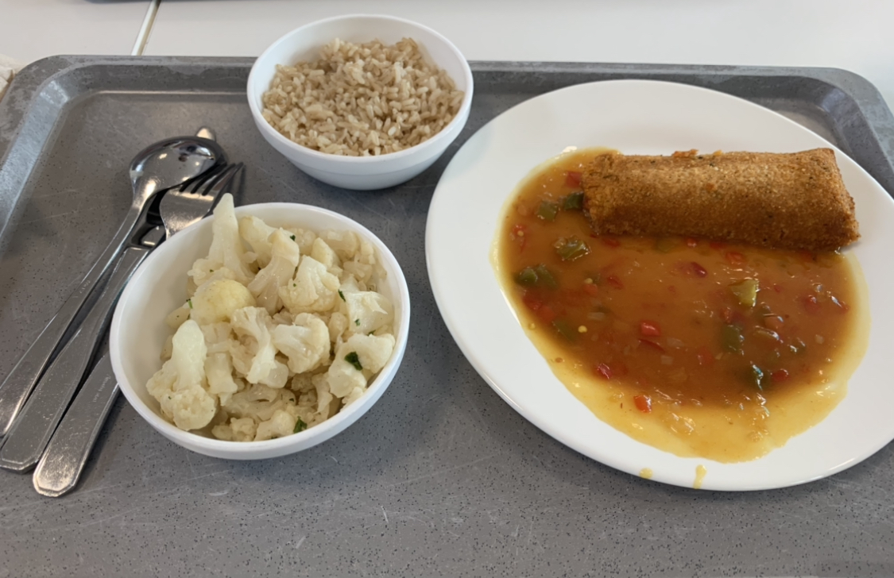
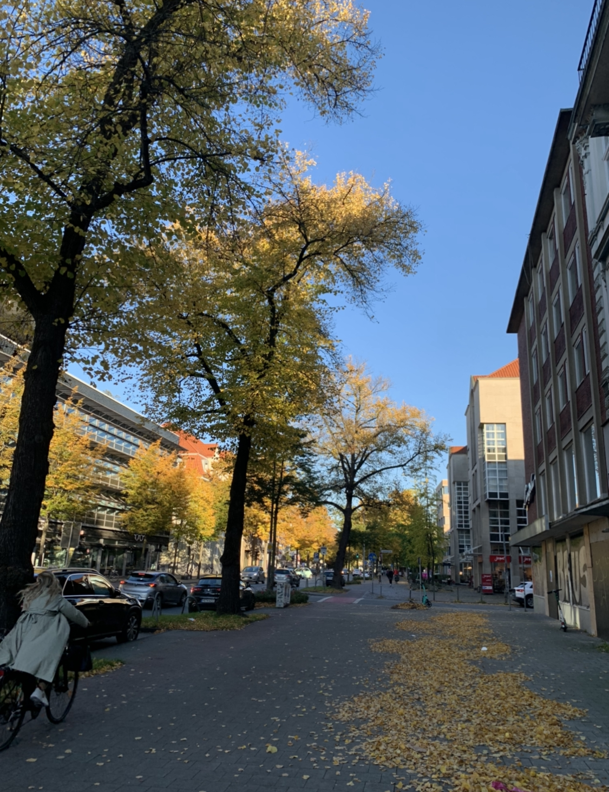
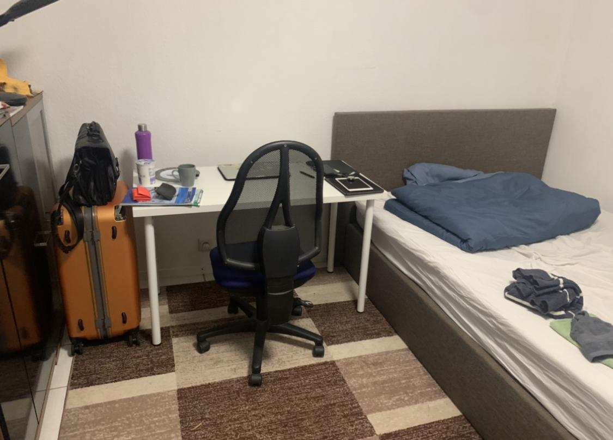
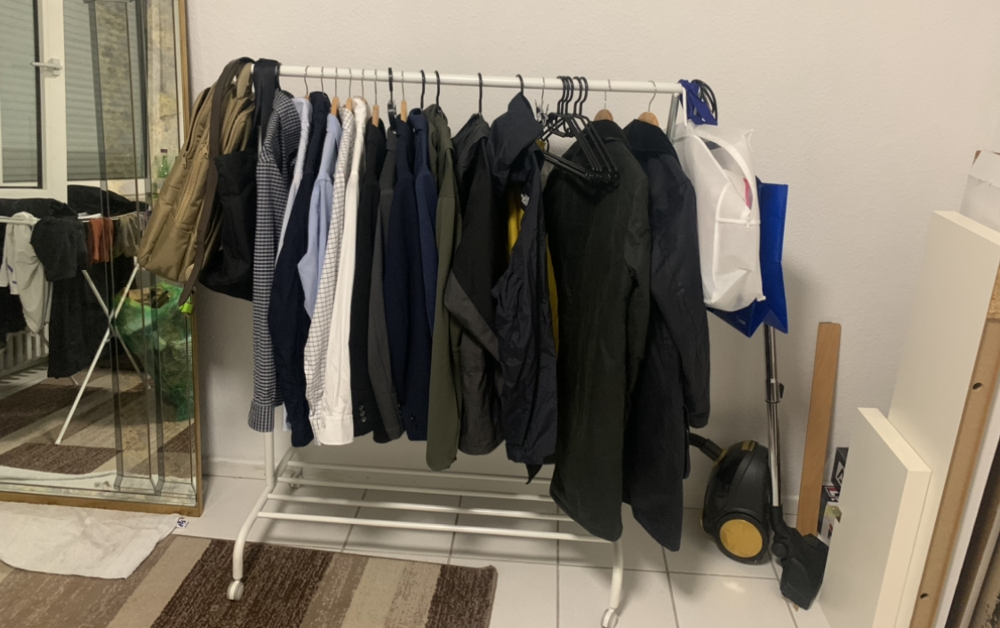
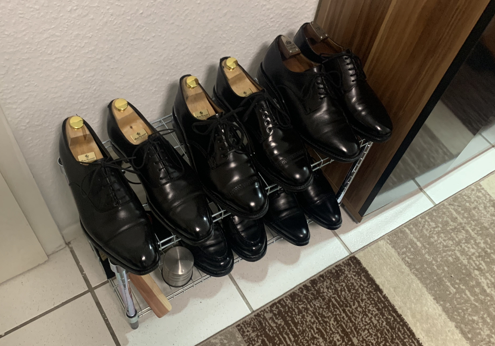

ドイツ滞在の記録(2022年10月)
現在ドイツの大学院にいます. 内部モデル理論を研究しています.
iphoneで閲覧する場合はリーダーを表示すると読みやすいです.
01.10.2022
復活しました. 滞在許可を得る必要があるが, 書類がいくつかあって大変である.
もうすでに日本の冬並みに寒く, 今の装備だと冬を越えられないと思ったのでコートを買いました. しかもちゃんとあったかいコートを買いました.


店員さんはイギリス人だった. 試着した時にNot too badと言っていて, イギリス人って本当に言うんだと感動した.
引っ越しました. ここが自分の定住場所になることを祈っています.
一ヶ月大変な思いをしました. 非常に冷たい扱いも時には受けました. 今はただ安らかに生きています.
02.10.2022
明日はドイツ統一の日で祝日らしい. 家具を買いに行こうと思っていたところだったが諦めてIKEAのオンラインストアで注文した. 日本より少々安かった.
しかし引っ越したばかりで寝具がない. 毛布だけは今すぐ必要である. 外出する. 今日は新しく買ったバブアーのコートに足元はハインリッヒ・ディンケラッカーにした.
コートはかなりあったかい. 満足である. エイジングが楽しみである.

至る所にベーカリーがある. ミュンスターでは日本のコンビニが全てパン屋に置き換わったぐらいの頻度で見かける.
朝はそこでパンを食べて, 会話している人をよく見る.
そのあと中心市街まで歩く. ところが日曜日でカフェしか営業していない... カフェ以外の全ての店は閉まっていた.
通りに人が結構いたのでどこかは開いてるだろうと思ったがそんなことなかった. 閉まった店のウィンドウを眺めている人が結構いた.
開店してる時に行けばいいと思った. (私は夜閉店した店のウィンドウを見るのは好きである. 深夜表参道を散歩するのは好きだった. )

諦めて帰宅した. 夜室内の温度は10度を下回るが, 気合いで耐えるしかない.
03.10.2022
今日はドイツ統一記念日で祝日であった. 店もほとんど全て閉まっていた. よって今晩も毛布なしである. 死ぬ.
前日はパン1個だけ食べて, それ以来何も食べてないので空腹で限界だった. お腹空きすぎて足元がふらつき始めたので, ダメもとで店を探しに行った.
今日は比較的あったかい. 最高気温は18度まで上がった. 今日は靴はAUDLEY, アウターはバブアーのボーダーで外出した.
色はブラックである. 最近買ったものより薄手で比較的あったかい日はこちらを着ようと思う. オイルドジャケットがドイツに来てからその本領を発揮している.
こちらの気候やライフスタイルの方が日本のそれよりオイルドジャケットにとって合っているように感じる.

AUDLEYはやはりかっこいいですね. 革の質, 履き心地もとても素晴らしいです.
散歩していると営業しているアジアレストランを見つけました. メニューが400種類近くあった. 全部ドイツ語で読むのにかなり時間がかかる.
体感英語を読むスピードが(当然文章の種類にも依存するが)日本語のそれの3分の1か4分の1くらいで, ドイツ語のそれは英語のそれの1割にも満たないと思う.
さらにドイツ語の語彙はかなり少ない. あと過去形, 完了形とかまだ知らない. オフィシャルなレベルだと一番下のA1.1を今月修了するぐらいである.
それゆえメニューを見ながら吟味が全然できない(当然写真もない). パッと目についた牛肉と炒めたご飯(つまり炒飯)を頼んだ.
あとはVorspeise(前菜のドイツ語である. これぐらいはわかる. )としてタンドリーチキンの串を頼んだ. 肉が食べたかった.
持ち帰りにした. 炒飯が10ユーロ, チキンが7ユーロほどだった.

量, 味ともに申し分なし!!! チキンは見た目通りの味がした. 炒飯がめちゃくちゃ美味しい. 量も十分で野菜も入っている.
ご飯とはこんなにも美味しいものなのだと実感した. やはり食べ慣れているものが一番である. しかもこれが10ユーロとはありがたい.
近所にこれがある安心感は凄まじい.
あとは数学したり, 靴を磨いたりした.
家探し編
注意: たまに怒りの感情が溢れます.
ドイツでの家探しについて書きます.
前提知識としてドイツの家探しは非常に大変であることが知られています. 需要が供給を大幅に上回っており, 売り手市場です. またドイツでは又貸しが合法です.
WGと呼ばれるシェアハウスに住んでいる学生が多いです. 現在私自身もそうです.
WGは家主が募集をかけ住人を集めますがここでも需要が非常に高いため1つの募集に50を超える応募が来ることが普通とのです.
また学生寮も人気です. しかし後述しますがミュンスターにおいては学生寮に入るのは2022年は特に厳しい状況でした. (これらは自分が渡航前に知っておくべき情報でした. )
ミュンスターでの家探しを始めたのは修士課程に進学が決まった後の7月中旬以降です.
日本にいる間はほとんど情報が入ってこないことに加えて, そもそも渡航準備が忙しかったので学生寮に応募するぐらいでした.
本格的に家探しを始めたのは渡航した9月からです. 渡航直前に学生寮を運営するオフィシャルな団体であるStudierendenwerk(今後も出てくるので名前を出しておく)にメールを何回か送っていて, 少し雲行きの怪しさを感じ取っていました.
ミュンスターについてまずInternational Officeに滞在場所が決まってないがどうすればいいかと尋ねに行きました.
留学生の相談を受ける窓口がありそこで今自分の状況を話すと, 自分と同じように住む場所が決まってない新入生が何人もいることを知りました.
担当の人が親身になってその日の宿泊所をまずは見つけることができました. そしてその人の知り合いが二ヶ月だけ住む場所を提供できるということで喜んで飛びつきました. 今思えばこれもとても幸運なことでした.
この二ヶ月以内に見つけるのはその時は余裕だと思っていました. ひとまず紹介してもらった部屋に住みながら家探しを本格的に始めました. これが9月2日のことです.
Internatinal Officeから家探し情報まとめが送られてきたのでそれに書いてあることをあてにして探し始めました.
後から気づいたことですがそこに書いてある学生寮の運営団体, 不動産屋のほとんど全てが機能していませんでした.
学生寮が安心だろうと思いそこに書いてある学生寮のいくつかに応募してみることにしました. メールを送って空きはあるか尋ねたり, CVや動機文を書いて応募したりしました.
送ったメールのうちほとんど全てが満室ですと帰ってきて残りは返信がありませんでした. 応募したものも全て落ちwaiting list入りでした.
その間にもミュンスターでよく使われている物件情報交換サイトでシェアハウスの募集にメールをいくつか送ったりしました. 返信は1通だけで満員とのことでした.
少し焦り始めStudierendenwerkにもう一度メールを送りましたが機械的な返信しかありませんでした.
そうこうしているうちに9月中旬となりこりゃまずいぞとなり始めました. その時住んでいた部屋は机がなかったり色々不便で早く出たいという気持ちもありました.
家探し情報まとめにミュンスターにある学生寮の情報が掲載されているのを見つけ, そのほとんど全てにコンタクトを取りました. 返信は満員ですだったり, 他の団体にたらい回しにされたりでした.
そのときにwg-gesuchtというサイトを知りました. シェアハウスの募集を掲載できるサイトでドイツではよく利用されています. wg-gesuchtでメッセージを送ることも始めました.
ドイツ語での募集が9割以上を占めていたので翻訳を用いてドイツ語で応募を繰り返していました. 結果は無でした. 返信すらなかったので俺はスパム認定されてバンされたんじゃないかと思っていました.
結局何も成果もなくメールやメッセージを送っただけでした.
かなりやばいと思い始め, Studierendenwerkのオフィスに相談しに行きました.
前にも言った通りStudierendenwerkはオフィシャルな団体であり, 学生寮運営の他にも学食の運営など大学に深く関わっています.
オフィスに行き, 担当の人に自分の状況を話し助けを求めました. 現在学生寮の待ち人数は800人とのことでした. 自分が年内に入寮することは不可能だと言われました.
また自分と同じように滞在場所が決まってない新入生が去年から何人もいることを聞きました.
担当の人からは「ホームレスになりたくなければ国に帰ればいい, 家が決まらなくて国に帰った留学生もいる. 」と言われました. 私はとても腹が立ちました.
大学運営にも関わっている団体が何を言ってるんだ??そんなことを言う権利がどこにあるのか??という気持ちになりました.
あなたたちはそういう路頭に迷った留学生の受け皿になるべきじゃないのか??と思いました. ドヤ顔で「国に帰った学生もいる」とか言ってんじゃねーよという気持ちになりました.
正直かなり心にきました. 日本の大学院を休学して, 自分の専門を求めてドイツまで来たのになんで俺はこんなに惨めな思いをしなければならないか...と思いました.
ドイツに来てやりたかったのは数学であって住む場所がなくなる恐怖に怯えながら家探しをすることじゃないんだ. 俺は数学がしたいんだと.
その後担当者から緊急滞在先の紹介もされました. ここは研究室の先輩から話を聞いていてとてもひどい場所ということだけ知っていました.
広い部屋にベッドが並べてあり, ベッドはカーテンで仕切られています. 問題はその部屋はガラス越しに外から見えるようになっておりプライバシーのかけらもありません.
またキッチンとWi-Fiもありません. 正直にここに住んで何ヶ月も家探しをするようじゃ自分もおしまいだ. こんなところに住んだら数学はできないと思いました.
路頭に迷った留学生をぶち込む場所がここかーとキレていました. ドイツは学生に優しい国という話を聞いていたが, この状況を見るとゴミとしか思っていないんだろうかと思いました.
このときこのまま家が見つからなくてここに住むことになったら日本に帰って東大数理で修士を取ろうと思いました. その日はあまりに腹が立ったので大学に行って数学をしていました.
改めて情報収集をすると学生のドイツでの家探しはwg-gesuchtでやるのがメジャーと知りました. wg-gesucht自体はもらった家探し情報まとめには一番下にURLだけ書いてあって拍子抜けしました.
結局そのまとめはそのURLしか役に立ちませんでした. 大学も現在の状況とかと照らし合わせてちゃんとまとめを作ってくれと思いました.
改めてwg-gesuchtでの家探しが始まりました. とりあえず自分が応募できる物件(女性専用ではないもの等)には応募しました.
自分を魅力的なフラットメイトに魅せるために文章を考えたりする時間が苦痛でした. 数学しながら新しい物件の通知が来たら応募するを毎日繰り返していました. 返信は全く帰ってきませんでした.
やっと1つ帰ってきたと思ったらやたら攻撃的な返信で「お前は取らない」と言われたりもしました. この時点でかなり疲弊していました. 精神的にかなりしんどかったです.
数学に集中したくても不安に圧迫されていました.
10月に入ってあと一ヶ月しか残ってない...と思いつつも家探しを続けていました. そして新しい物件に応募しました.
しかし電話でも応募できるとのことだったのでやぶれかぶれで電話しました. するとその日に見にきていいとのことだったので内覧しに行き, 無事決まりました. ホッとしました.
結局送ったメール, メッセージはトータルで120を超えました. wg-gesuchtで送ったメッセージはそのうち80弱で帰ってきた返信はたったの2個でした. 競争が激しすぎんだろ...
もう家探しをせずに済むことを祈っています. Studierendenwerkは当分恨んでいます. 書いてみたらまあ大変だったなぐらいで今は落ち着いています. 行けそうだなと思った人は是非ドイツに住みましょう!!
04.10.2022
今日の革靴.
大学に行く前にスーパーでいくつか買い物をしたレジで突然ドイツ語で話しかけられてドイツ語で答えられた成長.
今日は修士課程のオリエンテーションがあった. 履修に関しては明日説明があるので, それを除いた情報量は無だった. キャンパス内は学部の学生もいっぱいいた.
学部の学生はほとんどドイツ人のように見えた. (実際ドイツ語で教えられるのもありそう. ) 修士の学生はバラバラだった.
イランから来た人と話した. 数論やっているらしい. 東大のことを知っていた.
そのあとは布団を買いに行った. 20ユーロだった. シーツが50ユーロでいくらなんでも流石に高くねぇか!?となって今度買うことにした. IKEAとかで買うつもり.
帰りにスーパーに寄った. 今まで別な場所にある同じスーパーでは4個で1ユーロのパンがあってそれを1ユーロパンと呼んでよく食べていた. 味がついておらず, 程よく柔らかいのでおやつにも主食にも適していたので好きだった.
そのスーパーでは焼く前の状態が6個0.75ユーロで売っていた. つまり半額である. これは革命である. 焼き加減も調節できるのでさらに調理の幅が広がる可能性も秘めている. 迷わず買った.
あとはチーズとハムを買った. チーズとハムそれぞれ種類が20以上あるのでどれを買えばいいか毎回困る. 結局人々がどれを買うか観察して一番買われているやつを買うことにしている.
あとはドイツのスーパーでは全ての商品が値段に加えて1kgあたりの価格が書いてある. これを見て程々のやつを選んだりしている. 安すぎるのは激不味を踏む恐れがある.
帰って色々やって寝る.
05.10.2022
今日は修士課程の卒業要件や履修に関する説明会だった. 朝9時からあった. 数学科の人間早起きができない.
よくわからんが授業をいくつセットで取ればいいことがわかった. ビッグマックセットポテトLサイズドリンクLサイズにすることにした. 真面目に考える.
まず応用系の単位が必須らしい. シラバスを見ると普通にわからなそうなのばっかり. 確率統計を勉強したことないのでそこら辺がわからず.
唯一わかりそうなPDEを取るつもりでいる. 試験があるらしいだるすぎ. あとは集合論の授業を指導教官が担当するらしい.
ボレル同値関係の話は前から知りたかったので嬉しい. そういえば以前数理で後輩のS氏とその話をしたなぁ. 今度また彼に会いたい.
あとはドイツ語の授業もある. これは意欲があるので良い. 激重タスクなら死んでしまう. ただ成績はどうでもいいのでドイツ語を学びさえすればいい.
また発展的なコースを3セメスターに渡って3つ取る必要があるらしい. 1つは数学基礎論で決定である. あと2つだが可換代数はシラバス見る限り授業は既知そう.
数論幾何の授業もあって最終的にはエタールコホモロジー(あまりに変換が出来なさすぎてキレた)をセミナーで扱うらしい.
代数幾何はスキーム論をやったあと何かを示すらしい. (適当)
あと1つの候補は幾何学的群論か作用素環論を考えている. 作用素環論は今セメスターでやるつもりである. 前提知識が全く足りなかったら別なのを考える.
今期はこんな感じだ. 授業によっては平気で朝8時からある. 健康的な生活が送れそうだ(涙).
ドイツの修士課程は研究をあまり求められていない. どちらかといえば学部の延長という感じがする. 俺は研究がしたいが.
昼は研究室の修士のいつものメンバー自分合わせて3人とフランスからインターンで来た学生1人と学食に行った. 今日のメニューはハズレだった. この主食のコロッケのようなものがとても不味かった.
あと毎回思うけど量多すぎ.

そのあとは4人でコモンルームにコーヒーを飲みに行った. そのフランスの学生はモデル理論をやっているらしい.
特に安定性理論についての研究をしていると聞いた. 指導教官はあのTentらしい!! Tentがミュンスターにいることを知らなかった.
こっち来てから教科書や論文で名前を見るようなロジシャンを拝めて眩しい.
今日知った話だがいつもコーヒー飲んでるコモンルームはPh.D.の学生と先生方専用らしい. しかも勝手にそこでコーヒーを飲んでる修士の学生は我々3人だけらしい.
まあ誰も気にしてないし, 数学の話してるからいいよねとなった.
コモンルームにF先生がいたので質問をした. F先生はミュンスターの集合論グループにいる先生の1人である. 専門はもちろん内部モデル理論である.
F先生はFine Structure(内部モデル理論の一番基本的な道具)に世界一詳しいと言っても過言でない. 自分も彼の論文に非常に助けてもらった.
自分が現在詰まっているところを質問したところ, 自分が考えていたよりもずっと洗練されていて自然な証明をスケッチしてくれた. 感激した.
自分も彼のレベルに少しでも近づきたいものである. いずれは彼ともっと議論したい.

06.10.2022
近所の美容院だと失敗する未来しか見えないのでデュッセルドルフにまで行って, 日本人が経営する美容院で髪を切りに行きました. デュッセルドルフは日系企業の支社が多く, ドイツの中でも日本人が特に多いことで知られている.
日本人街もあり年に一回日本フェスティバルなるものがあるらしい. デュッセルドルフまでは電車で1時間40分ぐらいだった. 学生なので州内での電車の行き来は無料である. ありがたい.
デュッセルドルフ以外だとケルン, ドルトムント, エッセンなども無料で行ける. 電車といっても東京で走ってる電車というよりは各駅停車の新幹線に近いものだった. かなり快適だった.
早めにデュッセルドルフに着いてスタバでセミナーを聞いていた. 指導教官が入れ違いで日本に行っていてその発表を聞いていた. Pmaxに関連する話だった.
セミナー終わったあとは時間が余ったので散策していた. 確かに道を歩いていると日本人とそこそこすれ違う. スーツ姿の人か主婦っぽい見た目の人が多かった(気がする).
ラーメン屋もいくつかあった. ラーメン屋以外にも日本食料理屋がいくつもあった. 通りに日本食のスーパーが3つほどあった. そのうち1つで買い物をした.
売ってるものは全て日本のスーパーで売ってるものだった. ありがたい. ただ値段は2倍から3倍ほど出す必要がある. 最近よくサンドイッチを作って食べているのでキューピーマヨネーズを買った.
みりんも買いたかったが荷物が嵩張るのでまた今度にした.
そのあと美容院に行った. 店員はみんな日本人の店だ. あとは普段通り髪を切った. 色々ドイツの生活情報とかを聞いたりした. ドイツ生活は3年目から楽しくなるらしい. 石の上にも3年とはこのことか.
ドイツ人があまり風呂に入らない話もした. カットの出来栄えはとても良かった. また4週間後あたりに行こうと思う.
07.10.2022
郊外の家具屋でシーツなどを買った. あと大学に行った. いつもの研究室のメンバーで学食行って, そのあとは雑談していた.
数学の話だと全然付いて行けるのだがヨーロッパの地理, 歴史, 政治の話になるとそもそも知識がないのでそもそも何いってるかわからないことが多い. もっとニュースを聞いたりする必要がある.
08.10.2022
今日は一日家にいた. 明日は日曜日でスーパーが閉まるのでちゃんと午前中に買い出しに行った.
午後になってIKEAで注文していた家具が届いた. 新居に机がなかったのでやっと机で作業ができる. 失ってわかる重要性.



こちらに来てから食事に関する文化や衛生に対する感覚が違うなとよく感じる. 食事に関してはドイツの人はあまり料理を頻繁にしないのだろうなと感じる.
それは食文化にも表れているし, またキッチンを新品同然に綺麗に保てるのも料理をあまりしないからと私は考えている. (違ったら教えてください. )
部屋やキッチンを非常に綺麗に保ちたがるのにお風呂には毎日入らなかったり, 食べ物には平気でハエがたかったりしている.
ドイツの人は綺麗好きという話は自分も聞いたことがあるが日本の人のそれとは少し毛色が違うように感じる.
ドイツの人は衛生的な綺麗さというよりかは見た目の綺麗さ, 整理整頓された綺麗さを好むのだと私は今のところ解釈している.
09.10.2022--15.10.2022
今週は忙しくて更新をサボっていた. 今週から本格的に講義が始まった. ちゃんと講義を取らなければならないのはかなり面倒だ.
しかし面倒な講義を今セメスターに集約させたので残りはおそらく楽である. PDEの講義は何としてでもクリアしないと後々困るので頑張らないといけない.
あとは作用素環論の講義か幾何学的群論の講義かで迷っている. 今週は作用素環論の方はBanach代数を定義して, 単位的なBanach代数のスペクトルを定義した. そのあとは具体例を計算したりした.
次回はGelfand表現定理を示すらしい. 今のところ面白い. 幾何学的群論の方は基本的な群論からスタートした.
演習の授業(これがまた面倒である)もあり, 幾何学的群論の演習問題だけ配られた. 他は